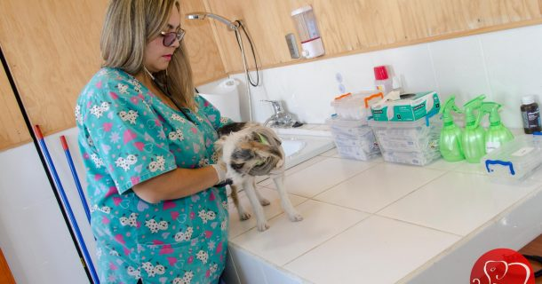

Veterinaria
Click para ver veterinarias cercas


La medicina veterinaria es la rama de la medicina que se ocupa de la prevención,
diagnóstico y tratamiento de enfermedades, trastornos y lesiones en los animales.
La veterinaria esta adecuada para hacer un servicio a las 24 hrs del dia si se presenta cualquier situcación.
La finalidad de la veterinaria es brindar el mejor servicio hacia los animales para que tengan buena salud.
En los animales mas se enfoca una veterinaria es en los perros y gatos ya que son los animales domesticos mas dominantes.
Servico que brinda la veterinaria:
- Diagnosticos
- Cirugias
- Especialidades
- Dermatología
- Oftalmología
- Reproducción
- Traumatología
- Anestesiología
- Etología
- Nutrición
- Peluqueria